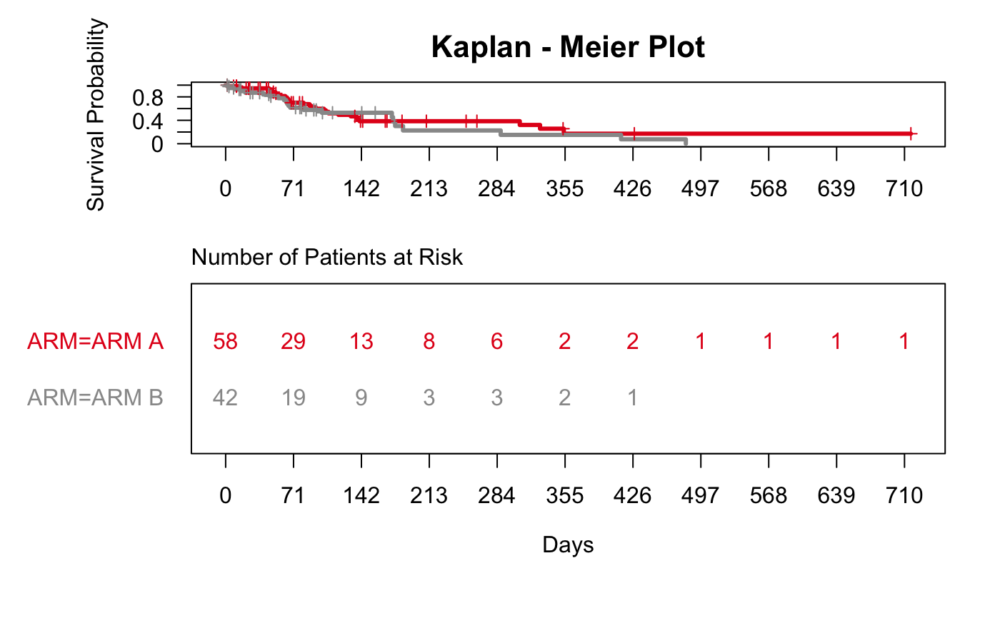
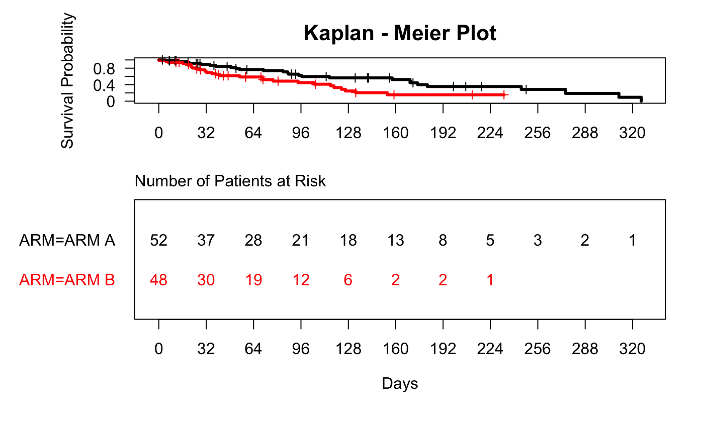
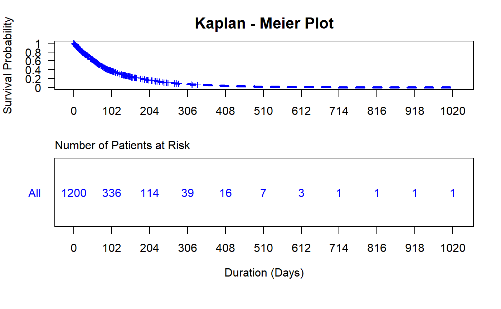

g_km.RdCreate a KM plot for any survfit object.
g_km(fit_km, xticks = NULL, col = NULL, lty = NULL, title = "Kaplan - Meier Plot", xlab = "Days", gp = NULL, vp = NULL, name = NULL, draw = TRUE, newpage = TRUE)
| fit_km | a class |
|---|---|
| xticks | break interval of x-axis. It takes a numeric vector or |
| col | a vector of color for each line. |
| lty | a vector of line type for each curve. |
| title | title for plot. |
| xlab | a string for label of x-axis |
| draw | draw the plot on device. |
| newpage | open a new draw page. |
library(random.cdisc.data) library(tern) ADSL <- radsl() ADSL$RACE <- factor(sapply(as.character(ADSL$RACE), function(x) { if (nchar(x)>9) paste0(substr(x, 1,9), "...") else x })) ADTTE <- radtte(ADSL) ADTTE_f <- subset(ADTTE, PARAMCD == "OS") fit_km <- survfit(Surv(AVAL, 1-CNSR) ~ ARM, data = ADTTE_f, conf.type = "plain") g_km(fit_km = fit_km)fit_km <- survfit(Surv(AVAL, 1-CNSR) ~ 1, data = ADTTE, conf.type = "plain") g_km(fit_km, xlab = "Duration (Days)", col = "blue", lty = "dashed")